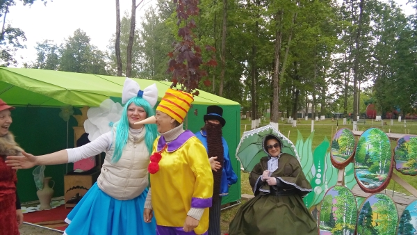
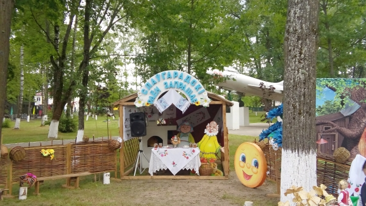

Фестиваль
детского творчества
«Золотая пчёлка» в нашем городе – это
несомненно праздник, который приобрел большую популярность в странах
СНГ и Европе.
Фестиваль
детского творчества
«Золотая пчёлка» в нашем городе – это
несомненно праздник, который приобрел большую популярность в странах
СНГ и Европе.
Из года в год растет престиж и расширяется география
фестиваля, учредителями которого являются Министерство культуры
Беларуси, Могилевский облисполком, управление культуры облисполкома и
Климовичский райисполком.
Инициатором этого прекрасного фестиваля был Иван Андреевич Борщёв, в то
время работавший заместителем председателя Климовичского райисполкома.
Главной причиной зарождения фестиваля было
стремление наладить работу с детьми на более высоком уровне. В 1995
году наши ребята из дома пионеров учувствовали в детском фестивале
«Нотки над Бесядью», который проходил в г.п.
Хотимске. Приехали они тогда оттуда окрыленные и много рассказывали об
увиденном и услышанном.
Тогда и появилась заманчивая идея, которую Иван Андреевич Борщёв
согласовал в благотворительном Лайонс – клубе, одной из
программ деятельности которого и являлась поддержка талантливых детей.
Предложение было воспринято всеми правильно.
Обсудив детали, разработали программу проведения фестиваля,
посвященного Международному
дню защиты детей и пригласили в Климовичи на праздник в 1996 году
ближайших соседей – детские коллективы из Костюковичей,
Кричева и Славгорода – районов области, пострадавших от
аварии на Чернобыльской АЭС, и детский коллектив из российского
города-соседа Шумячи. Участникам и зрителям он понравился. Были и
первые победители.
В 1997 году было решено проводить фестиваль на более широком уровне. И стал вопрос: а как назвать наш фестиваль? Идею тогда подала директор районного Центра культуры Людмила Анатольевна Тимохович. Так и стал он «Золотой пчёлкой». И это не случайно, так как символом города Климовичи является герб с изображением пчелы.
В 1997 году фестиваль был уже региональным. На
праздник
приехали представители девяти районов Беларуси и России. Примечательным
был 1998
год, когда город принял очень талантливый, яркий коллектив из далекой
от нас Тулы.
Благодаря бывшему начальнику Управления культуры Могилевского
облисполкома Михаилу Григорьевичу Дорошкову наш
фестиваль из регионального в 1999 году получил статус областного, а в
2001 г. – Международного.
Первый Международный фестиваль детского творчества «Золотая пчёлка» проводился в год, когда ООН обьявила Десятилетие культуры мира и ненасилия в интересах детей. Праздник детства собрал около 500 участников. Были представлены все области Белоруссии и практически целиком Могилёвская область. Приехали делегации из Кишинёва (Молдова) и Шумячского района (Россия).
В субботу всех обьединил «Вечер дружбы», а в воскресение проходило праздничное шествие, а также состоялся гала-концерт, каждый номер которого зачаровывал зрителей. На площади Великого Октября собралось столько людей, что, казалось, не было свободного места.
Участников фестиваля (их было уже более полутысячи), гостей праздника Климовичи встречали обновленными и похорошевшими. Семь концертов дали в этот раз участники конкурса в сельской местности Климовичского района и три – за её пределами. Присутствовали на втором Международном фестивале председатель благотворительного обьединения «Помощь детям Чернобыля» региона Рейн-Нае Долорес Райнинг и посол Республики Молдова в Белоруссии Ион Чёрный.
Третий Международный фестиваль «Золотая пчёлка» проходил на протяжении трёх дней. Только прослушивание конкурсантов заняло 12 часов. Расширилось и представительство: к белорусским, российским и молдавским юным талантам добавились и украинские. Работу жюри возглавил ректор Белорусского государственного института проблем культуры В.П. Скороходов.
На этой «Золотой
пчёлке» 9 – летняя Ксения Ситник получила Диплом
первой степени, приз зрительских симпатий, а ещё огромную игрушку от
одной из
благодарных зрительниц.
Незабываемым зрелищем для всех остался и праздничный в
вечернем небе над городом,
а также выступления профессиональных коллективов из Минска –
ансамблей «Беседа»
и «Камерата».
В год 60 – летия Победы
советского народа над фашисткими захватчиками проходил V Международный
фестиваль. Присутствовавшим на празднике ветеранам Великой
Отечественной войны дети преподнесли цветы.
Впервые мы услышали колокольный перезвон. Со столь необычным,
высокого уровня номером выступали ребята из Тулы.
Председателем жюри фестиваля был композитор, народный артист
Республики Белоруссия Валентин Иванов.
Более 150 участников V Международного фестиваля детского творчества
«Золотая пчёлка» отмечены дипломами и подарками
жюри этого большого праздника музыки, песен, хореографии, живописи и
декоративно-прикладного искусства.
Присутствовал на празднике и вручал награды второй председатель
благотворительного обьединения «Помощь детям
Чернобыля» Штефан Бастине.
Но главным подарком для всех почитателей
«Пчёлки» стало известие о том, что следующий
фестиваль пройдет в Летнем амфитеатре, который построит в городе
местная власть совместно с областными и республиканскими ведомствами.
Настоящим фейерверком талантов блеснул шестой
по счету
Международный фестиваль детского художественного творчества
«Золотая пчёлка».
Юные дарования из Кыргызстана и Норвегии, Украины и Молдовы, Латвии и
России, а также нашей республики продемонстрировали свои способности во
многих жанрах искусства, к которым присоединилось и цирковое.
Гран-при в конкурсе музыкантов-исполнителей завоевал школьник
из Горок Владислав Калита.
Лучшим голосом «Золотой пчёлки» признан будущий
участник детского
Евровидения, юный житель г. Мозыря Андрей Кунец.
А зажигательным искусством танца жюри под председательством
композитора Валерия Иванова и многочисленных зрителей покорили
участники молдавского народного ансамбля танца
«Цэрэнкуца».
Дипломантами и лауреатами стали многие исполнители и коллективы, без
фестивальных подарков не остался никто.
В этом году VII
Международный фестиваль детского творчества «Золотая
пчёлка»
собрал более 900 юных талантов из 9 стран: Беларуси, России, Украины,
Молдовы, Латвии, Китая, Казахстана, Кыргызстана и Турции.
Открылся фестиваль на концертной площадке летнего амфитеатра в
центральном городском парке красочным театрализованным представлением.
Впервые в этом году состоялось детское карнавальное шествие и
выставка-ярмарка из Минска «Мир мёда и здоровья» с
участием пчеловодов Беларуси и России.
Необычные сладкие призы преподнёс таллантливым коллективам
генеральный продюсер
выставки-ярмарки Ю.А. Редьков. 30-килограмовую бочку мёда получили
гости из Татарстана,
50 кг замечательного продукта - танцевальный коллектив из Бобруйска
и 100 кг - делегация из Китая.
Кроме этого, были ещё специальные призы, учредителями которых
являлись отделение ОАО «Белагропромбанк» в г.
Климовичи, Могилёвский
облвидеопрокат и наш земляк – генерал-майор, советник
постоянного комитета Союзного государства В.В. Павлов.
В числе тех, кто награждён Гран-при на этом фестивале, была и
юный художник из г. Климовичи
Дарья Голикова.
Субботний вечер участники и гости фестиваля
провели вместе с компанией МТС – официальным партнёром VII
Международного фестиваля детского творчества «Золотая
пчёлка». Молодёжи всех девяти стран понравились выступления
Алексея Хлыстова, Анны Шаркуновой, DJ Lexa, Matrix. Очень обаятельный
ведущий не давал скучать зрителям, проводил конкурсы и
вручал подарки от компании.
Своеобразным подарком всем участникам и гостям фестиваля от компании
МТС стала карнавальная дискотека, которая состоялась в 19 часов в
городском парке.
VIII Международный
фестиваль
детского творчества «Золотая
пчёлка»
начался с приезда первых гостей – уже 27 мая в г. Климовичи
встречали делегацию из Казахстана.
В последующие три дня прибыли представители из Болгарии, Польши,
Румынии, Эстонии, Молдовы, Кыргызстана, Украины, России и разных
уголков Белоруссии.
В течении двух дней в Тимоновском сельском доме культуры и районном
Центре культуры проходили конкурсные прослушивания и просмотр
участников фестиваля в
хореографической и вокальной номинациях.
Жюри возглавлял композитор, народный артист Республики Белоруссия В.К.
Иванов.
В районном Доме ремёсел и краеведческом музее были представлены на суд
компетентного жюри работы декоративно-прикладного и изобразительного
искусства.
В
городском парке работало много выставок-продаж
замечательных изделий учащиеся
детской художественной школы и детской школы исскуств.
В торгвых рядах каждый день было многолюдно. Особым спросом пользовался
мёд «Монастырский»,
представленный на фестивале проектом «Мир мёда и
здоровья».
IX Международный
фестиваль детского творчества
«Золотая пчёлка» — светлый
незабываемый праздник
юных
дарований, традиционно проходит накануне Международного Дня защиты
детей и объединяет в свои ряды молодых танцоров, певцов, музыкантов и
художников из разных стран ближнего и дальнего зарубежья: России,
Украины, Молдовы, Латвии, Казахстана, Кыргызстана, Болгарии, Польши,
Румынии, Турции, Китая, Норвегии и, конечно, Беларуси.
Конкурсные выступления и концерты участников, конкурсы рисунков на
асфальте и на мольберте «Мой родны кут», конкурс на
лучшее сладкое изделие «Сладкие фантазии»,
выставки-продажи творческих работ мастеров декоративно-прикладного и
изобразительного искусства «Лавка чудес»,
развлекательные программы и подарки для детворы – все это
можно было увидеть в Климовичах с 28 по 31 мая.
Во время праздничного открытия IX Международного
фестиваля детского
творчества «Золотая пчёлка» его участников, гостей,
многочисленных зрителей приветствовали композитор, народный артист
республики, председатель фестивального жюри Валерий Иванов.
Право поднять флаг было предоставленно победителю фестиваля
«Золотая пчёлка» Дмитрию Рыжикову.
Участникам и гостям праздника были представлены танцевальные программы,
выступления воспитанников детских спортивных школ, игровые площадки и
аттракционы, развлекательные программы, выставка-ярмарка «Мир
мёда и здоровья», концерт мастеров искусств Беларуси,
экскурсии по достопримечательным местам Могилевщины.
На этом красочном и торжественном мероприятии вместе с участниками
фестиваля выступили лауреаты международных конкурсов из Турции Джем и
Джейден Гюрдал.
Порадовали всех пришедших в тот вечер в городской парк огненное шоу и
феерверк.
На X Международный фестиваль детского творчества «Золотая пчёлка» съехались юные таланты из Европы и Азии. Более тысячи исполнителей, свыше десятка номинаций.
В фестивале приняли участие гости из 18 стран: Армении, Беларуси, Бельгии, Болгарии, Казахствана, Кыргызстана, Латвии, Молдовы, России, Эстонии, Польши, Норвегии, Финляндии, ряда автономных республик. Причём шесть стран участвовали впервые.
В составе делегации из Германии было 14 девочек
— участниц
танцевальной группы «Табу»,
четыре руководителя и официальный представитель — депутат
городского совета г. Бинген господин Бастине Штефан.
Кроме того, приехали 10 членов благотворительной инициативы
«Помощь детям Чернобыля» региона
Рейн–Нае,
которая занимается организацией приёма детей
на оздоровление.
В пятый раз официальным партнером фестиваля
выступил оператор связи МТС.
В рамках фестиваля компания МТС пригласила в Климовичи группы
«Цвет Алоэ» и J:Mors. Послушать отличную музыку и
поучаствовать в веселых конкурсах, организованных ведущим программы
Дмитрием Санковичем, собралось множество желающих.
Музыкально-развлекательная программа от МТС вызвала огромный интерес и
внесла новые ритмы в размеренную жизнь города.
Конкурсные прослушивания проходили по таким номинациям, как солисты — народное пение, вокальные ансамбли — народное пение, вокальные ансамбли — эстрадное пение. Просмотр участников фестиваля проходил и по хореографическому искусству (коллективы эстрадного танца и народно–сценического танца). Конкурсный просмотр работ по декоративно-прикладному и изобразительному искусству принимали детская художественная школа и районный краеведческий музей. В их залах открылись выставки "Академия детского творчества" и "Волшебные краски детства".
Надо было видеть, как тепло и сердечно прощались мальчишки и девчонки, обмениваясь адресами, телефонами, сувенирами. Дни, проведённые вместе, стали для них ярким, запоминающимся событием. И многие убедились, что язык дружбы прост и понятен, какими бы дальними ни были расстояния между городами и странами.
XI
Международный фестиваль детского творчества
«Золотая пчёлка» начался в областном
центре.
В Могилёве 25 мая зарубежным делегациям
организовали обзорную экскурсию по Могилёву, которая включала в себя
посещение Советской площади, ратуши, площади Звёзд, улицы Ленинской,
Свято-Никольского монастыря, Буйничского поля, зоосада. Затем
творческий подарок участникам фестиваля преподнёс заслуженный
любительский коллектив Беларуси театр-студия
«Радуга».
В четверг утром участники фестиваля отправились в
г. Климовичи, часть из них — в дизель–поезде.
Маршрут
этот был специальным и носил название «Поезд
дружбы». Время в пути пролетело быстро, ибо в вагонах звучали
песни, шутки, загадки, звонкий детский смех, разноязычная речь
– русская, украинская, литовская, киргизская,
китайская…
В поезде с зарубежными участниками фестиваля работали две команды
учащихся Могилёвского государственного колледжа искусств. Ещё народный
ансамбль «Вясёлка» знакомил участников фестиваля с
белорусскими песнями.
XII Международный
фестиваль детского творчества
«Золотая пчёлка», на который
собрались юные дарования из 9 стран: Беларуси, Украины, России, Латвии,
Литвы,
Эстонии, Молдовы, Казахстана и Таджикистана, проходил в нашем
городе в
период с 30 мая по 3 июня 2012 г.
Представители этих стран с завидным постоянством приезжают в наш город,
чтобы порадовать хозяев и гостей своим творчеством.
Жителей и гостей нашего города во время детского
праздника ожидала масштабная культурно–развлекательная
программа. Во
время праздничного
концерта «Радуга детства» прошли творческие
презентации
стран–участниц фестиваля.
Торжественное открытие фестиваля состоялось 1 июня. Этот день начался с
прослушивания солистов и вокальных ансамблей народного плана, а также
просмотра выступлений хореографических коллективов, творческих работ
юных художников и мастеров.
В вечерней программе был концерт оркестра народных инструментов им. Л.
Иванова областной филармонии при участии молодых талантов Могилёвщины
—
лауреатов международных и республиканских конкурсов.
Порадовали как детей, так и взрослых шоу мыльных пузырей, лазерное шоу
и праздничный фейерверк.
XIII Международный
фестиваль детского творчества
«Золотая пчёлка», являющийся
многонациональным праздником творчества
юных исполнителей и занимающий значительное место в культурной жизни
Республики Беларусь прошёл в нашем городе с 29 мая по
2 июня. Фестиваль собрал исполнителей и коллективы из Беларуси,
Казахстана, Латвии, Литвы, Молдовы, России, Словакии, Турции, Украины,
Финляндии, Эстонии. Среди них
учащиеся детских музыкальных и художественных школ, детских школ
искусств, воспитанники художественных студий и кружков, действующих в
учреждениях культуры, образовательных школах, гимназиях, колледжах, а
также в школах-интернатах и детских домах для детей-сирот.
В первый день фестиваля зарубежные делегации побывали в городе
Могилёве, где для ребят была организована
культурно–развлекательная
программа с обзорной экскурсией по областному центру, концерт
«Молодые таланты Могилёвщины» оркестра народных
инструментов имени Л. Иванова с участием лауреатов международных и
республиканских конкурсов, стипендиатов, а на следующий
день все отправились в город
Климовичи. В этот день юные артисты приняли участие в концерте
«Мы — белорусы», а также вечере дружбы и
развлекательной танцевальной программе «Диско-данс»
с участием лауреатов фестиваля «Золотая пчёлка»,
солиста УК «Могилевская областная филармония»
Алекши Чёрного, фольк-шоу балета «Альянс».
XIV
Международный фестиваль детского творчества
«Золотая пчёлка» в г. Климовичи
проходил в восемнадцатый раз под девизом Года гостеприимства и
празднования 70-летия освобождения Республики Беларусь от
немецко-фашистских захватчиков. Программа была насыщена самыми
различными
музыкальными, культурными мероприятиями и конкурсными проектами. Формат
музыкального праздника определен четырьмя основными тематическими
днями: «Дзень беларускай гасціннасці»,
«Дзень сяброўства», «Дзень замежных
культур» и «Дзень дзяцінства».
Для гостей мероприятия в центре города, в районе площади 50-летия
Великого Октября,
развернулась масштабная выставка-продажа белорусских предприятий,
производящих товары и продукты питания для детей, центром которой стала
деревня «Домочай».
ОАО
«Булочно–кондитерская компания
«Домочай» (Могилёв) предлагал широкий ассортимент
сладостей. Традиционно работала театрализованная фольклорная
выставочно–торговая экспозиция «Клімавіцкая
гасцёўня»,
была организована дегустация блюд белорусской национальной кухни,
продажа
сувенирной продукции, работа игровых аттракционов.
Все желающие могли приобрести сувениры, посетить игровые аттракционы,
попробовать блюда национальной кухни. Вечером гостей праздника ждали
обширные концертная и конкурсно–танцевальные программы.
XV Международный
фестиваль детского творчества
«Золотая пчёлка»,проходил в городе
Климовичи с 28
по
31 мая 2015 года.
На юбилейный фестиваль были приглашены звёзды белорусского эстрады
Алёна
Ланская, Иван Буслай и другие. В состав жюри вошли известная
армянская балерина Жаклин Сархашан, художественный руководитель
национального академического народного хора имени Цитовича Михаил
Дриневский, мастерство танцевальных коллективов оценивал Расэн
Богданов,
председатель федерации фольклорных групп Болгарии.
Гостей праздника ждали театрализованные
фольклорно-выставочные
экспозиции «Сардэчна запрашаем» с участием
творческих коллективов, мастеров декоративно-прикладного творчества,
концертная программа «Карагод сяброў»,
празднично-выставочная экспозиция «Беларускі
кірмаш», где были представлены предметы белорусского быта и
регионального костюма, мастер-классы, тематические фольклорные
программы творческих коллективов Могилёвской области.
Очень отрадно, что, несмотря на принятое решение проводить
Международной фестиваль детского творчества «Золотая
пчёлка»
1 раз в два года (фестиваль в 2016 году не проводился), организаторы
фестиваля решили не нарушать традиций и организовали региональный
праздник, на котором по традиции представлялось детское творчество.
Мероприятие собрало вместе более 400 участников. В Климовичи показать
свои музыкальные, вокальные и хореографические способности приехали
коллективы из Добруша, Дрибина, Костюкович, Краснополья, Кричева,
Славгорода, Хотимска, Черикова, Чаус.
Помимо белорусских делегаций мы
также встречали гостей из России и Армении. Своими выступлениями нас
порадовали ансамбль «Веселая карусель» МБУ ДО
«Суражская детская школа искусств им. А. П.
Ковалевского» и танцевальная группа
«Арег» Армянского детско-юношеского культурного
Союза.
Программа мероприятий началась с праздничного шествия. В ярких красивых
нарядах участники регионального фестиваля «Золотая
пчёлка» собирает друзей» прошли праздничной
колонной по центральной улице города.
После этого в амфитеатре состоялся
гала-концерт участников праздника.
Песни и танцы юных дарований доставили зрителям немало приятных минут.
Всем творческим коллективам и каждому сольному исполнителю были вручены
дипломы
участника праздника «Золотая пчелка» собирает
друзей» и мягкие игрушки.
Специальный
приз от Белагропромбанка получила воспитанница Климовичской детской
школы искусств Анастасия
Поборцева.
В конкурсе рисунка на асфальте в своих
возрастных категориях дипломами I степени были награждены Настя
Шурухайлов, Владислав Сапранков, Виктория Гоманова, дипломами II
степени отмечены Мария Сапранкова, Виктория Кустова, Тамара Сомова,
дипломы III степени получили Варвара Дроздова, Арина Юхневич, Татьяна
Семченко.
Очень много мальчиков и девочек изъявили желание принять участие в
соревновании по велорейсингу. Страсти на
специально подготовленной трассе кипели нешуточные.
В результате
— лучшее время по прохождению дистанций и, соответственно,
1-ые места (согласно своим возрастным категориям) у Павла Сотченко,
Полины Судиловской, Егора Егорченко, Елизаветы Демиденко, Артёма Ореха,
Анны Скоркиной. 2-ые места завоевали Иван Вяткин, Ольга Осмоловская,
Даниил Тарасенко, Павел Келбусов, Дарья Андреенко. 3-и места заняли
Евгений Петроченко, Назар Егорченков, Егор Гриньков, Елизавета
Павлюченко. Победители были отмечены дипломами соответствующих степеней
и небольшой суммой денежного вознаграждения.
А самые маленькие
участники соревнования, воспитанники детских садов,
которые проходили дистанции на трёхколесном велосипеде были награждены
подарками.
 За
звание «Мистер «Золотая
пчёлка» боролось 5 мальчиков, столько же девочек претендовало
на титул «Мисс «Золотая пчёлка». Юные
конкурсанты рассказывали о себе и своих увлечениях, пели, танцевали,
демонстрировали наряды из природного материала.
За
звание «Мистер «Золотая
пчёлка» боролось 5 мальчиков, столько же девочек претендовало
на титул «Мисс «Золотая пчёлка». Юные
конкурсанты рассказывали о себе и своих увлечениях, пели, танцевали,
демонстрировали наряды из природного материала.
По результатам всех
конкурсов наибольшее количество баллов среди девочек набрала Ксения
Барсукова, она и была удостоена звания «Мисс
«Золотая пчёлка»; среди мальчиков победителем вышел
Ростислав Рыськов и у него звание «Мистер «Золотая
пчёлка».
Титулы «Мисс Элегантность» и
«Мистер Элегантность» присвоены, соответственно,
Анастасии Напреенко и Захару Короткому.
Титул «Мисс
Очарование» получила Елизавета Ионаш, титул «Мистер
Очарование» — Артём Маслов.
Самыми артистичными
признаны Мария Курлукова и Евгений Дубровинский.
Титульная лента
«Мисс Фантазия» была повязана Александре
Тихоновской, а лента «Мистер Фантазия» —
Святославу Серякову. Всем юным участникам были вручены подарки.
Вечером в амфитеатре состоялась концертная программа, подготовленная
учреждениями образования района, а также концерт «Майские
звёзды» поставленный силами самодеятельных артистов районных
центров культуры Климович и Кричева.
На протяжении всего дня в городском парке работали тематические
площадки учреждений образования и культуры, проходила выставка-продажа
работ взрослых и юных мастеров декоративно-прикладного и
изобразительного искусства. Районная детская библиотека организовала
выставку детских книг «Книжный остров радости».
Районный
краеведческий музей предоставил вниманию гостей праздника стенд с
уникальными фотографиями, на которых запечатлена Климовщина IX
—
XX в.в. «Город, которого нет», а также стенд со
снимками,
отображающими историю «Золотой пчёлки» —
«От
фестиваля к фестивалю».
С утра до позднего вечера работали
аттракционы и торговые павильоны.
Музыкальный праздник собрал более 700 исполнителей и коллективов из
8 государств: Беларуси, Кыргызстана, Молдовы, России, Румынии, Украины,
Финляндии и
Сербии, которая является новичком фестиваля.
31 мая в наш город приехали первые участники — ансамбль песни
«Весна» из Харькова.
Чуть позже встречали Бишкекский детский образцовый музыкальный
театр «Таберик» и танцевальный коллектив из
Бухареста.
1 июня на фестивале был объявлен «Днём мира» и
посвящён Международному
дню защиты детей.
Утром к детской школе искусств подъехали сразу несколько автобусов. Они
привезли юных конкурсантов из Воскресенска и Самары, Волгограда и
Петрозаводска, Великого Новгорода, Казани, Кировска — всего
около 160
человек.
Уже во второй половине дня началась молодёжная программа «Фестиваль радужных красок», в городском парке заработала театрализованная фольклорная выставочно-торговая экспозиция «Солнечный калейдоскоп».
Ну, а какой же конкурс без жеребьёвки? На этот раз её превратили в праздник с названием «Планета детства — планета дружбы». Вечером зрителей порадовали творческие коллективы и исполнители нашей страны — участники театрализованной программы «Беларусь — краіна шчаслівага дзяцінства». Завершился первый день фестиваля молодёжной дискотекой «Dream Team».
Международный фестиваль детского творчества «Золотая пчёлка» всегда оставляет после себя незабываемые впечатления. И в этот раз праздник детства, таланта, дружбы позволил всем участникам и гостям форума окунуться в мир прекрасного, проявить свои способности и испытать массу приятных, положительных эмоций.
Семнадцатый по счету Международный фестиваль детского творчества собрал под своим крылом более 600 юных дарований из Беларуси, России, Украины, Молдовы и Болгарии. Четыре праздничных дня пролетели, как один миг. А все дело в том, что программа «Золотой пчёлки» была насыщенной, разнообразной, и каждый мог найти в ней что-то для себя интересное и полезное.
Уже в первый фестивальный день в городском парке работала театрализованная фольклорная выставочно-торговая экспозиция «Карагод беларускай гасціннасці», тематическая развлекательная площадка «Сонечны калейдаскоп», игровая площадка «Формула детской радости», была организована выставка детских рисунков и работ декоративно-прикладного искусства «Мой родны кут», прошла праздничная программа «Фестывальная краіна», шоу-программа «Фестывальнае сузур’е талентаў «Залатой пчолкі», диско-марафон и др. Скучать никому не пришлось.
С 23 по 26 мая в г. Климовичи проходил XVIII Международный
конкурс детского творчества «Золотая пчёлка»,
в
котором приняли участие
коллективы и исполнители из Беларуси, России, Словакии, Украины,
Узбекистана, Кыргызстана, Сербии, Латвии, Болгарии.
Главным моментом всего фестиваля и самым ответственным для ребят стали
конкурсные просмотры и прослушивания, которые прошли 24-25 мая.
Международное жюри оценивало выступления участников по жанрам:
хореографическое искусство (народно-сценический, эстрадный, современный
танец), вокальное искусство (народное, эстрадное пение),
изобразительное искусство (живопись, графика), декоративно-
прикладное искусство. Конкурсанты делились на три возрастные группы:
младшая (9-12 лет), средняя (13-
15 лет) и старшая (16-18).
XIX Международный фестиваль детского творчества «Золотая пчёлка» проходил в г. Климовичи с 28 по 30 мая 2021 г.
В этом году детский фестиваль приехали более 400 юных певцов, танцоров, художников из Беларуси, России, Армении, Узбекистана, Кыргызстана, Молдовы и Сербии.
И традиционно каждый фестивальный день был наполнен яркими и интересными событиями. В городском парке три дня работали разнообразные тематические площадки и фотозоны. Хочется отметить интересную инициативу работников Климовичской районной библиотеки. Многие климовчане в дни фестиваля с удовольствием побывали на фотосушке «Золотая пчёлка», где на фотоснимках были представлены наиболее яркие моменты фестивалей разных лет. Действительно, интересно было посмотреть, как проходил фестиваль 20 лет назад, на его маленьких звёздочек, многие из которых сейчас стали известными артистами.
Юбилейный XX Международный фестиваль детского творчества «Золотая пчёлка» проходил в нашем городе с 26 по 29 мая.
Несмотря на дождь, вечером 27 мая праздничное открытие Международного фестиваля детского творчества «Золотая пчёлка» началось вовремя. Площадь 50 лет Великого Октября, на которой проходило красочное действо, и прилегающая к ней территория парка были полны зрителей.
Масштабный форум в этом году собрал под своим крылом более 600 юных талантливых мальчишек и девчонок из шести стран: Беларуси, России, Армении, Кыргызстана, Узбекистана, Казахстана.
На протяжении многих лет Международный фестиваль детского творчества «Золотая пчёлка» зажигает немало ярких звёздочек и становится трамплином в творческое будущее. Многие из конкурсантов получили признание зрителей, уважаемого жюри и стали обладателями Гран-при. Некоторые из них порадовали зрителей своими творческими номерами на праздничном концерте «Золотая пчёлка. 20 лет вместе». На сцене выступили обладатели Гран-при фестиваля разных лет: образцовая студия моды «Авангард» Могилёвского областного центра творчества, участница российского телевизионного шоу «Голос. Дети», представитель Беларуси на Международном песенном конкурсе «Евровидение-2020», трижды стипендиат специального фонда Президента Республики Беларусь по поддержке талантливой молодежи, солистка продюсерского центра «Ангелы добра» г. Могилёва Арина Пехтерева, заслуженный любительский коллектив Республики Беларусь образцовая цирковая студия «Арена» «Городской дворец культуры г.Орша», заслуженный любительский коллектив Республики Беларусь народный фольк-шоу балет «Альянс» ГУО «Гимназия-колледж искусств г. Бобруйск».
XXI Международный фестиваль детского творчества «Золотая
пчёлка» собрал в Климовичах около 900 участников. В этом году
своё творчество здесь продемонстрировали представители 4 стран:
Беларусь, Россия, Кыргызстан, Узбекистан. Коллективы и индивидуальные
исполнители в возрасте от 9 до 18 лет соревновались в трёх номинациях -
вокальное, хореографическое и изобразительное искусство. Двухдневная
программа праздника была насыщенной и интересной: в неё вошли не только
конкурсные этапы, но и работа творческих площадок, выставки-продажи,
молодёжные проекты, спортивные акции.

Второй день форума для юных участников был самый ответственный: им
предстояло пройти конкурсное прослушивание и просмотр в жанрах
«Вокальное искусство», «Хореографическое
искусство». На сценах районного центра культуры и
Тимоновского сельского Дома культуры солисты и ансамбли
продемонстрировали своё мастерство в народном и эстрадном пении,
коллективы исполнили народно-сценические, эстрадные и современные танцы.
В городском парке юные художники приняли участие в пленэре-конкурсе
«Как прекрасен этот мир».
В городском парке были развёрнуты тематические площадки, в
том числе игровая зона «В стране мультфильмов и
сказок», состоялся концерт духового оркестра Могилёвского
областного управления МЧС. Свой концерт подарили детские творческие
коллективы, исполнители учреждений культуры, дополнительного
образования Могилёвской области.
Праздничное открытие ХХI Международного фестиваля детского творчества
«Золотая пчёлка» состоялся на площади 50 лет
Великого Октября.
Завершился этот фестивальный день праздничным фейерверком.
Климовчане признаются, что дождь сопровождает церемонию открытия
Международного фестиваля детского творчества из года в год. На этот раз
даже перенесли на неделю старт «Золотой пчёлки», но
примета
осталась в силе.
В
субботу, 3 июня, на площади 50 лет Великого Октября состоялся
гала-концерт «Звёздный старт», во время которого
были вручены дипломы лауреатам и победителям фестиваля —
самым ярким и одаренным юным «звёздочкам».
Дипломами третьей степени отмечено 52 конкурсанта, второй степени
— 37.
В
жанре «Изобразительное искусство» Диплома второй
степени были удостоены: учащаяся ГУО «Сельская детская школа
искусств Климовичского района» Светлана Стогначева, учащиеся
ГУО «Климовичская детская школа изобразительных
искусств» Мария Сапранкова и Елизавета Петроченко.
Дипломами третьей степени были награждены учащиеся Климовичской ДШИИ Елизавета Федосеенко, Полина Прохорова, Алина Дашкевич, Анна Свириденко, Любовь Овчинникова, учащаяся сельской детской школы искусств София Андрюшкина.
В номинации «Вокальное искусство» Диплом второй степени — у учащейся ГУО «Климовичская детская школа искусства» Марии Николаевой.
Дипломами первой степени в жанре «Вокальное искусство» награждены: Александра Агнищенко, учащаяся ГУО «Могилёвская детская школа искусств № 5»; Екатерина Лашкина, солистка образцовой вокальной студии «Микс» ГУО «Центр дополнительного образования детей и молодежи «Ранак» г. Минска»; Даниил Власенко, учащийся УО «Могилёвский государственный колледж искусств»; София Бутаменок, солистка продюсерского центра «Ангелы добра», г.Могилёв; Лина Новожилова, солистка творческого коллектива «КЛО AMADINA» городского клуба Муниципального учреждения «Районный Дворец культуры имени А. Г. Малова», г.Тутаев; Дарья Квасова, солистка заслуженного любительского коллектива Республики Беларусь образцового эстрадного театра-студии «Радуга» ГУДО «Могилёвский областной центр творчества»; ансамбль народной песни «Хорошухи» ГУО «Могилёвская детская школа искусств № 5»; вокальное трио в составе Кристины Старостиной, Александра Земцова, Ксении Куродовой (ГУО «Могилёвская детская школа искусств № 7»); вокальный проект «Анелы» продюсерского центра «Ангелы добра», г.Могилёв; ансамбль «Позитив» вокально-хоровой студии «Созвездие» ГУО «Средняя школа № 41 г. Могилёва».

Дипломами первой степени в жанре «Хореографическое искусство» отмечены: образцовый ансамбль танца «Весялушка» ГУО «Детская хореографическая школа искусств № 1 г. Минска»; образцовый ансамбль танца «Вдохновение» Муниципального бюджетного учреждения дополнительного образования «Детская школа искусств» г. Сельцо Брянской области; танцевальные группы «Boys & Girls», «Kids Stars» заслуженного любительского коллектива Республики Беларусь образцового эстрадного театра-студии «Радуга» ГУДО «Могилёвский областной центр творчества»; группа «Сказка» образцового ансамбля эстрадно-спортивного танца «Серпантин» Муниципального учреждения культуры «Дворец культуры городского округа Навашинский», г.Навашино.
Дипломами первой степени в жанре «Изобразительное искусство» были награждены: Дария Никитина, участник группы «Академка» образцовой студии изобразительного и декоративно-прикладного творчества «Тон» ГУДО «Могилёвский областной центр творчества»; Иван Смолов, учащийся ГУО «Могилёвская детская школа изобразительных искусств»; Майя Тарадейко, учащаяся ГУО «Детская школа искусств г. Кричев»; Ксения Шараева, участник образцовой студии изобразительного искусства «Мастихин» ГУО «Детская школа искусств и художественных ремесел г.Горки»; Милана Котова, учащаяся ГУО «Могилёвская детская школа искусств № 5».
Гран-при фестиваля в этом году были удостоены самые талантливые и целеустремленные «звёздочки». В номинации «Вокальное искусство» наивысшая награда — у Ульяны Тищенко, солистки вокально-хоровой студии «Созвездие» ГУО «Средняя школа № 41 г. Могилёва», а также у вокальной группы «Весёлые нотки» заслуженного любительского коллектива Республики Беларусь образцовой детской эстрадной студии «Весёлые нотки» ГУДО «Центр творчества «Эверест» г. Могилёва».
В номинации «Хореографическое искусство» Гран-при удостоена группа «Искорки» образцового ансамбля эстрадно-спортивного танца «Серпантин» Муниципального учреждения культуры «Дворец культуры городского округа Навашинский», г. Навашино, Нижегородская область, Российская Федерация. В номинации «Изобразительное искусство» наивысшую награду получил Владислав Свяховский, участник группы «Академка» образцовой студии изобразительного и декоративно-прикладного творчества «Тон» ГУДО «Могилёвский областной центр творчества».
На фестивале «Золотая пчёлка» зажглось немало ярких звёздочек, для многих мероприятие стало настоящим трамплином в творческое будущее. Фестиваль отличает многогранность, жанровое разнообразие, искренняя и тёплая атмосфера.
По материалам газеты «Родная нива» .
В городе Климовичи с 31 октября по 3 ноября проходил ХХІІ
Международный
фестиваль детского творчества «Золотая пчёлка».
Участие в
форуме приняли более 300 юных дарований из России, Азербайджана,
Узбекистана и Беларуси. Коллективы и индивидуальные исполнители в
возрасте от 9 до 18 лет соревновались в 9 номинациях. Программа
фестиваля была насыщенной и интересной: в неё вошли не только
конкурсные этапы, но и работа творческих площадок, выставки-продажи и
многое другое.
Как сообщили в оргкомитете фестиваля, партнёрами детского праздника
стали Могилёвский филиал РУП «Белтелеком», ОАО
«Кричевцементношифер», ООО
«Евроторг», ООО
«Санта Ритейл», ОАО «Белорусский
цементный
завод», ООО «Дунфанхукн», областная
организация
Белорусского фонда мира, ОАО «Климовичский ликёро-водочный
завод», ГУКДСП «Климовичская ПМК № 256»,
УКП
«Коммунальник», представительство Болгосстраха по
Климовичскому району, центр банковских услуг № 710 ОАО «АСБ
Беларусбанк».
Климовичский государственный аграрный колледж 2 ноября стал местом
проведения церемонии награждения лауреатов XXII Международного
фестиваля детского творчества «Золотая пчёлка» и
заключительного гала-концерта «Сияние звезд».
Дипломами Гран–при награждены 5 конкурсантов:
Положение О проведении Международного фестиваля детского творчества «Золотая пчёлка» в 2025 году.